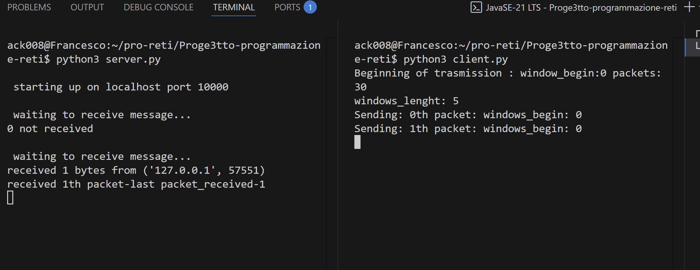
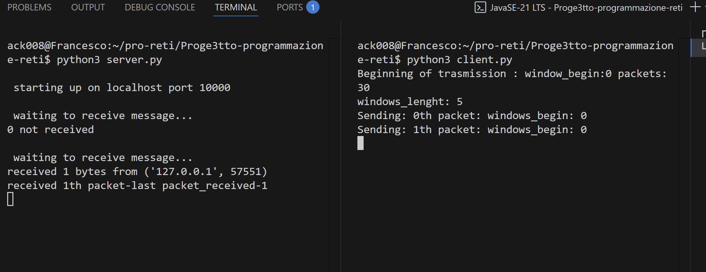
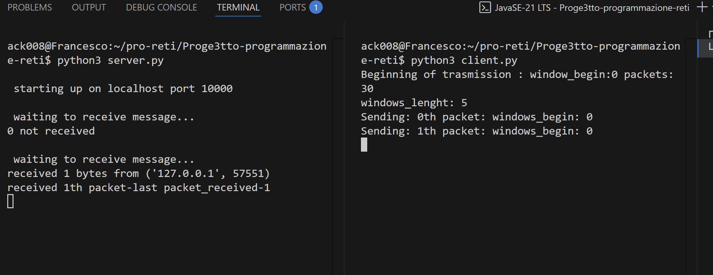

Il progetto riguarda il realizzare una finestra di un protocollo back and go.
Protocollo che riguarda il livello data link del modello iso-osi.
Il protocollo consiste nel mandare dei messaggi in sequenza utilizzando il metodo dello shifting window.
Abbiamo una "finestra" con una lunghezza predefinita e mandare solo i messaggi contenuti in quella finestra, per ognuno di questi messaggi
che si invia, il server dovrà mandare un acknowledge contenente il numero del pacchetto da lui ricevuto, però se il numero del pacchetto non è quello successivo a l'ultimo ricevutto in precedenza ( segno che 1 pacchetto non è stato ricevuto), non invia gli acknowledge.
D'altro canto, il client ogni volta che riceve un acknowledge ( che sicuramente saranno in ordine di pacchetti inviati) shifta la finestra di 1 posto e quindi verrà inviato il prossimo messaggio della finestra.
Per tutto il tempo il client ha un timer che scorre e che, ogni volta che riceve un acknowledge, si resetta; ma se un pacchetto viene perso il client non riceverà più degli acknowledge e quindi il timer sarà libero di azzerarsi.
Quando il timer scende a zero, il client rinvia tutti i messeggi della finestra corrente.
Ho realizzato una simulazione del protocollo in python creando due script: server.py e client.py
il server all'inizio avrà un pacchetto precedente segnato come -1 (di fatto non ha ancora ricevuto niente) e man mano che riceve i pacchetti, se il pacchetto è quello successivo al pacchetto precedente ricevuto, invia al client l'ack.
Per semplicità i pacchetti inviati e ricevuti saranno delle stringhe con il numero del pacchetto, fatta eccezzione per il pacchetto di fine messaggio, che avrà come scopo quello di far resettare il server e metterlo in attesa di una nuova serie di pacchetti,
quindi quando il server riceverà l'ultimo pacchetto reimpostera l'ultimo pacchetto ricevuto a -1
Il client invece avrà un thread con un timer ed un thread con il ricevitore degli ack ed il main thread che invia i pacchetti.
Il client avrà il vero e proprio meccanismo della finestra ed invierà i pacchetti in sequenza se e solo se sono dentro alla finestra.
Quando il thread dedicato agli ack, ne riceve uno, si shifta la finestra di 1 posto e quindi il thread principale ricomincerà ad inviare il prossimo pacchetto.
Questi sono alcuni screenshot dell'esecuzione dei programmi

La simulazione funziona e sarebbe molto facile aggiungere l'invio di pacchetti più complessi di semplici numeri, purchè essi siano numerabili